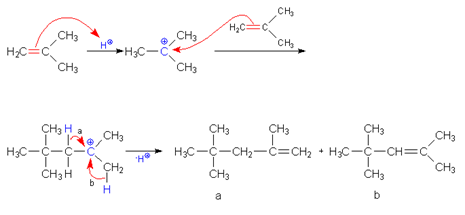
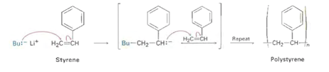
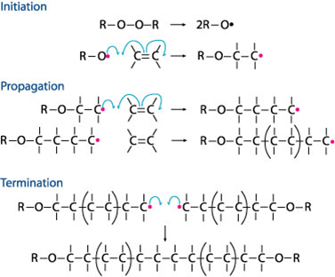

In a polymerization reaction, monomers are linked together in order to form large polymer chains
Homopolymers : Polymers that are made up of monomers
Copolymers : Polymers that are made up of two or more monomers. Can only be made using step-growth polymerization
Chain-Growth polymers are created by chain-reaction polymerization in which a reactive intermediate is formed, via an initiator that adds to the carbon-carbon double bond of an unsaturated substrate. This intermediate then reacts with another monomer, and another, and so on, to form a chain. The reaction occurs in three steps: initiation, elongation, and termination.
The initiator is an acid.
Initiation: A proton from an acid is added to an alkene in order to form a carbocation
Elongation: Another alkene molecule donates an electron group, forming a larger carbocation, and this process continues, resulting in a higher molecular weight carbocation
Termination: Occurs with the loss of a proton
Polymerization of isobutylene is given below:

The initiator is an anion.
Initiation : Begins with an attack by a nucleophilic reagent on one end of a double bond, resulting in the formation of a carbanion
Elongation : Attack by this carbanion on another alkene, results in a larger carbon carbanion, and this process continues, resulting in a higher molecular weight carbanion
Termination : The reaction is finished when the addition of any group, such as a proton, is carried out to destroy the carbanion on the other end of the chain
Polymerization of styrene is given below:

The initiator is a peroxide catalyst.
Initiation : Requires the formation of two free radicals, which is an uncharged molecule, usually with an unpaired valence electron
Elongation : The process continues with the stepwise addition of a free radical to an alkene molecule
Termination : The reaction ends with either the combination or the disproportionation of the free radicals
Polymerization of ethene is given below:

The polymerizations of ethene and propene using either of these processes result in high molecular weight polymers with astounding physical properties.
Phillips Petroleum Process
Step-Growth polymers are formed by step-growth polymerization, in which the molecular weight and the length of the chain of the polymer is built up slowly. There is only one reaction mechanism by which the polymers are formed. Bifunctional monomers are required in order for this type of polymerization to occur. The polymerization occurs through the individual reactions of the functional groups of the monomers. Two monomers form a dimer, two dimers form a tetramer, and so on, until a high molecular weight polymer is formed.
Polymers that are made up of two or more repeating units (monomers). Copolymers are commercially important. Different types of copolymers can be made depending on the distribution of the monomers in the unit.